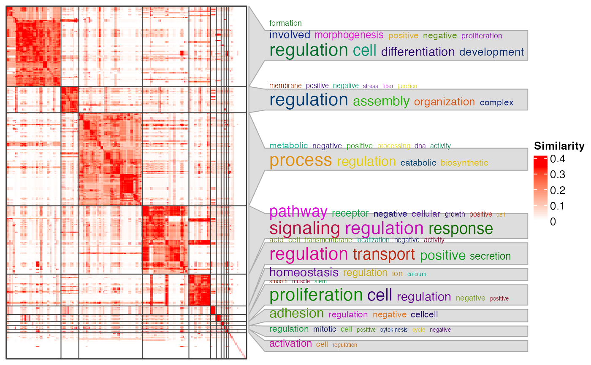
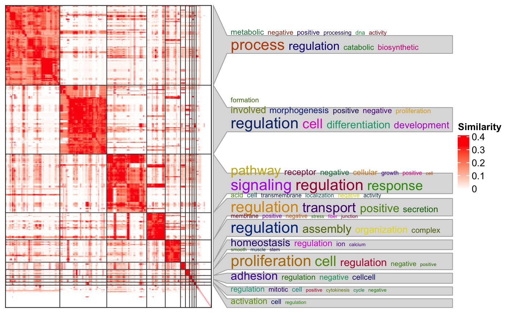

ht_clusters.RdVisualize the similarity matrix and the clustering
ht_clusters(
mat,
cl,
dend = NULL,
col = c("white", "red"),
# arguments that control the word cloud annotation
draw_word_cloud = TRUE,
min_term = round(nrow(mat)*0.01),
order_by_size = FALSE,
stat = "pvalue",
min_stat = ifelse(stat == "count", 5, 0.05),
exclude_words = character(0),
max_words = 10,
word_cloud_grob_param = list(),
fontsize_range = c(4, 16),
bg_gp = gpar(fill = "#DDDDDD", col = "#AAAAAA"),
# arguments that control the heatmaps
column_title = NULL,
ht_list = NULL,
use_raster = TRUE,
run_draw = TRUE,
...)A similarity matrix.
Cluster labels inferred from the similarity matrix, e.g. from cluster_terms or binary_cut.
Used internally.
A vector of colors that map from 0 to the 97.5^th percentile of the similarity values. The value can also be a color mapping function generated by colorRamp2.
Whether to draw the word clouds.
Minimal number of functional terms in a cluster. All the clusters with size less than min_term are all merged into one separated cluster in the heatmap.
Whether to reorder clusters by their sizes. The cluster that is merged from small clusters (size < min_term) is always put to the bottom of the heatmap.
Type of value for mapping to the font size of keywords in the word clouds. There are two options: "count": simply number of keywords; "pvalue": enrichment on keywords is performed (by fisher's exact test) and -log10(pvalue) is used to map to font sizes.
Minimal value for stat for selecting keywords.
Words that are excluded in the word cloud.
Maximal number of words visualized in the word cloud.
A list of graphic parameters passed to word_cloud_grob.
The range of the font size. The value should be a numeric vector with length two. The font size interpolation is linear.
Graphics parameters for controlling word cloud annotation background.
Column title for the heatmap.
A list of additional heatmaps added to the left of the similarity heatmap.
Whether to write the heatmap as a raster image.
Internally used.
Other arguments passed to draw,HeatmapList-method.
A HeatmapList-class object.
# \dontrun{
mat = readRDS(system.file("extdata", "random_GO_BP_sim_mat.rds",
package = "simplifyEnrichment"))
cl = binary_cut(mat)
ht_clusters(mat, cl, word_cloud_grob_param = list(max_width = 80))
#> Perform keywords enrichment for 11 GO lists...

ht_clusters(mat, cl, word_cloud_grob_param = list(max_width = 80),
order_by_size = TRUE)
#> Perform keywords enrichment for 11 GO lists...

# }